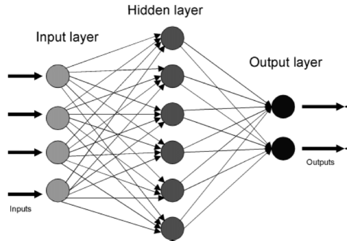

Basic Structure
A neural network is a machine learning model inspired by the way the human brain processes information. It uses layers of connected "neurons" (nodes) that pass values forward to make a decision or prediction.
Neural networks are useful when problems involve complicated patterns, such as speech recognition, image classification, and natural language understanding.
